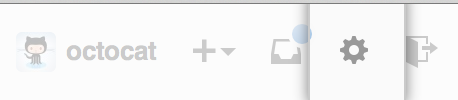
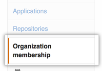
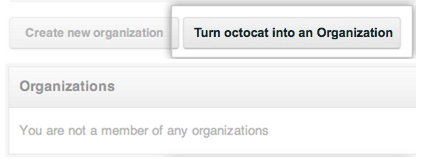
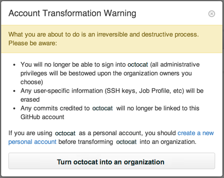
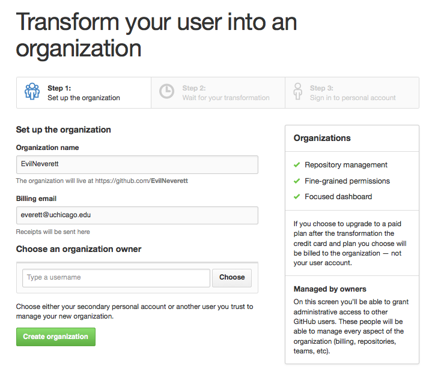
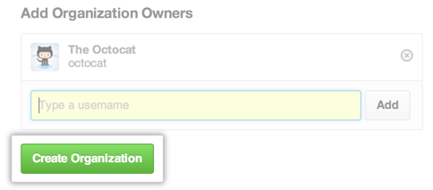
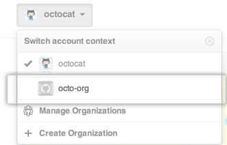

If you need to give more granular permissions for accessing repositories in a personal account, you can convert the personal account to an organization.
Warning: Before converting a user into an organization, keep these points in mind:
- You will no longer be able to sign into the converted user account.
- An organization cannot be converted back to a user.
- The SSH keys, and associated user information, will not be transferred to the organization. This is only true for the user account that's being converted, not any of the user account's collaborators.
- Any commits made with the converted user account will no longer be linked to that account. The commits themselves will remain intact.
1. Create a personal account
You cannot access repositories that belong to an organization unless you are a member of one of its teams. As a result, you'll need to create a second user account that will let you access the organization after you convert. You can add this second user account to the Owners team in the new organization.
2. Leave any organizations you're already a member of
If the user you're converting is already a member of other organizations, you must first leave the other organizations.
3. Convert the account into an organization
In the top right corner of any page, click . 
In your user settings sidebar, click Organization membership. 
Under "Transform account", click Turn
into an organization . - In the Account Transformation Warning dialog box, review and confirm the conversion. Note that the information in this box is the same as the warning at the top of this article. 
- On the "Transform your user into an organization" page, under "Choose an organization owner", choose either the secondary personal account you created in the previous section or another user you trust to manage the organization. 
- Once you've chosen an owner, click Create Organization. 
Note: Collaborators on personal account repositories are not automatically added as team members when the account is converted to an organization. If you have collaborators on your personal account repositories, we will create teams that can access those repositories and invite the collaborators to join those teams.
4. Sign in to the organization
If you added your secondary personal account as the new owner in the last step of the conversion process, sign in to that account, and in the account context switcher, you'll be able to access your new organization!
